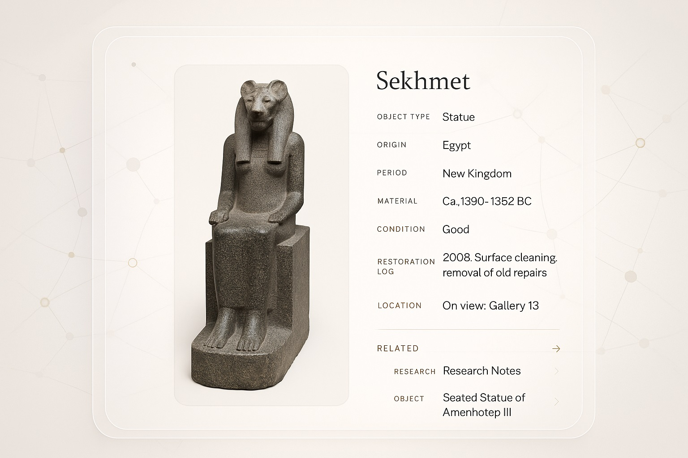
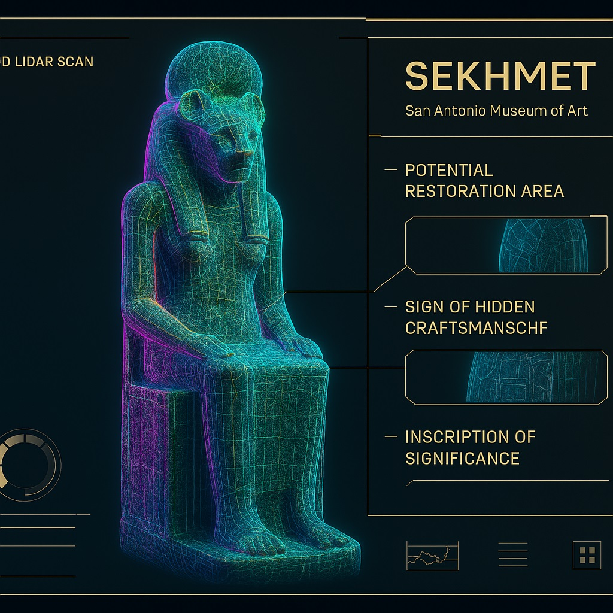

Where history lives, breathes, and connects.
Living Archives is a digital museum platform that transforms artifacts into living nodes of knowledge. Each entry links metadata, conservation records, scans, scholarly research, and curatorial notes, forming a dynamic, interconnected archive.
Store rich metadata, high-res imagery, 3D scans, condition reports, and linked documentation all in one elegant interface.
Objects are visualized as part of a digital constellation, showing historical, thematic, and scholarly relationships.
Connect research and collection data across institutions, enabling shared exhibitions, conservation planning, and storytelling.
Below are concept images showing how the interface might look and feel.
 If your museum or institution is interested in piloting Living Archives or seeing a custom demo, reach out.
Start a Conversation